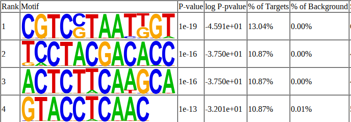

#root.dir <- here::here()
knitr::opts_chunk$set(
collapse = TRUE,
comment = "#>",
#root.dir = root.dir
fig.height = 6,
fig.width = 7.00787 #178mm
)
knitr::opts_knit$set(#root.dir = root.dir,
dpi = 350)
library(data.table)
library(ggplot2)
library(tidyverse)
library(cowplot)
library(MEDIPS)
library(DiffBind)
library(BSgenome)
library(Rsamtools)
library(edgeR)
library(gtools)
library(DNAcopy)
library(rtracklayer)
library(viridis)
library(dplyr)
library(genomation)## Warning: replacing previous import 'Biostrings::pattern' by 'grid::pattern'
## when loading 'genomation'library(biomaRt)
library(GenomicRanges)
library(DT)
library(magick)
library(patchwork)
library(slickR)
library(svglite)
#library(ggpubr)The adapters were trimmed from raw files were trimmed using trimmotatic followed by alignment to genome using bowtie2. Lastly the aligned files were sorted and MACS2 was used for peak calling. Here is a short summary of the number of peaks with previous control and IgG control:
I used the annotatePeaks tool from homer to annotate the
enriched regions and then used Rscript to generate the plots. To
annotate the location of a given peak in terms of important genomic
features, annotatePeaks.pl calls a separate program
(assignGenomeAnnotation) to efficiently assign peaks to one of millions
of possible annotations genome wide. Two types of output are provided.
The first is “Basic Annotation” that includes whether a peak is in the
TSS (transcription start site), TTS (transcription termination site),
Exon (Coding), 5’ UTR Exon, 3’ UTR Exon, Intronic, or Intergenic, which
are common annotations that many researchers are interested in. A second
round of “Detailed Annotation” also includes more detailed annotation,
also considering repeat elements and CpG islands. Since some annotation
overlap, a priority is assign based on the following (in case of ties
it’s random [i.e. if there are two overlapping repeat element
annotations]): TSS (by default defined from -1kb to +100bp) TTS (by
default defined from -100 bp to +1kb) CDS Exons 5’ UTR Exons 3’ UTR
Exons CpG Islands Repeats Introns Intergenic ** Only applicable
for the “Detailed Annotation”.
The regions of interest are generated by the following steps
These are the regions which are enriched in TAYN and Methyl-Seq and are also enriched in the hMe/MeDip-Seq data.
DMRs intersected with DipSeq and CapSeq consensus peaks
And the top motifs for these enriched regions are

Along with the CA and CG oligos account for 9.11% and 4.79% of the total reads in the peaks. I am working on a script to calculate this percentage for each of the peaks as well. I further calculated the percentage of CA and CG oligos in each of the peaks regions
The regions of interest are generated by the following steps:
These are the regions which are not enriched in WT/Methyl-Seq and are enriched in the Mutant/TAYN-Seq data.
DMRs intersected with Dip consensus peaks only